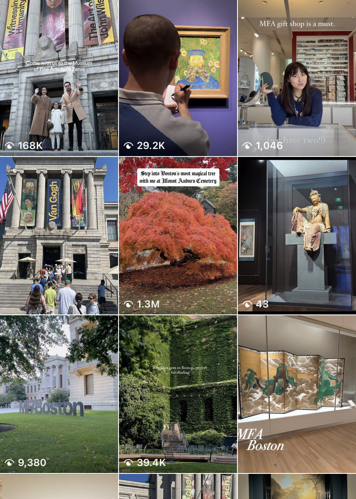
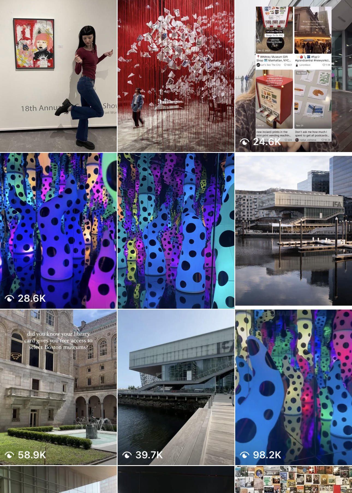
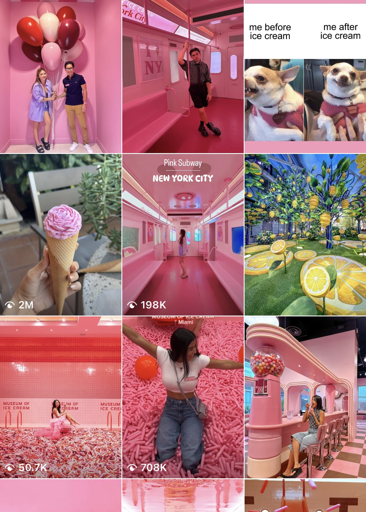
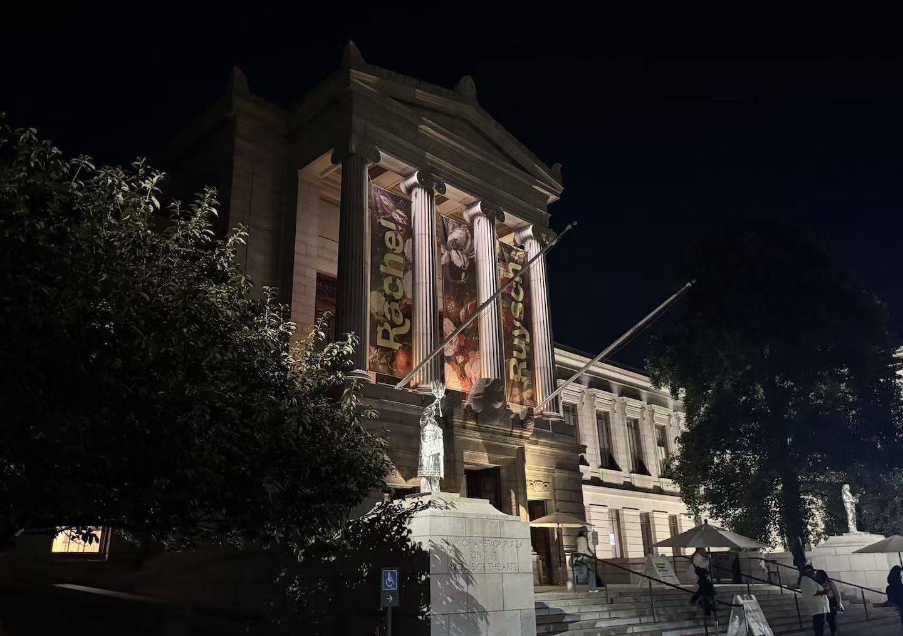
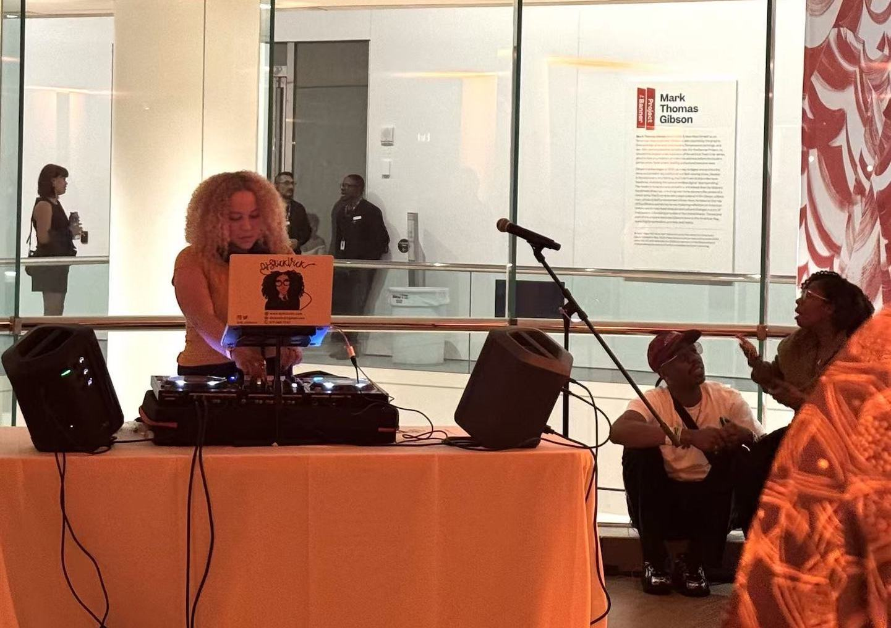

The way we engage with museums now — taking photos, sharing, posing — reflects how we process culture in the social media age.
By Ricole Chen
“Wait, let me take a photo first.”
At a Cézanne exhibit in Shanghai, crowds pose in front of a painting and then quickly walk to the next. "There’s people who are, like, 'Do it, move on, you know? Do it for the 'gram,'" says Alexis Henson, who studies how social media is reshaping museum attendance and engagement. What was once mostly heard at the restaurant table is now common in museums, and it's changing how visitors experience art — and how museums connect with visitors.
Museums are no longer the solemn, academic spaces they once were. Many new institutions, especially the pop-up and immersive museums are built for cameras and interactions. In 2016, the first Museum of Ice Cream opened in New York City. Its pink sprinkle pool and different settings like the airplane became a backdrop for visitors' selfies on Instagram.
Visitors post different content based on different types of museum they visit. Some museums are built for Instagrammable posts.
This visualization compares what visitors share on Instagram under three museum hashtags:
#MFABoston, #ICABoston, and #MuseumOfIceCream, based on the most recent 100 posts from each on Instagram.
At the Museum of Fine Arts, posts are evenly split between artwork and events.

The ICA Boston shows nearly equal shares of selfies and exhibits.

In contrast, the Museum of Ice Cream is dominated by selfies.

According to Google Trends, what people are looking for when they search for museums has shifted over the past twenty years from educational and formal to interactive and entertaining. From 2004 to 2010, the searches were focused on regional encyclopedic art museums, or institutional names, but between 2010 and 2015, museums like the Children’s Museum, and Museum of Feelings began to trend, reflecting a growing desire for social, shareable, and immersive experiences. From 2017 to 2021, "Instagrammable museums” marked a turning point. Museums were no longer limited to art or artifacts. Searches for visually driven, interactive experiences expanded the definition of museum, such as Museum of Icecream, Body Worlds, Museum of Illusions, Spy Museum, and Museum of Dream Space, and the trend continued until today.
But that trend is shifting. As Claire Ogden, who works in arts communications at the contemporary art space at Northeastern University, Gallery 360, explains, “People aren’t just gonna come see a show because it looks great on their feed anymore.” The aesthetic hook still draws attention, but museums now rely on deeper, participatory experiences to sustain it.
Visitors often photograph art and wall labels but never revisit them, Ogden recalls a class visit at the Gallery 360, when a professor told students, “I know you’re tempted to take a picture and go home, but the assignment is to sit with one artwork for at least five minutes. It’s more meaningful to do it here.” For some, the behavior feels like a shallow interaction that doesn't fully engage with the art. But it is also a chance, and a challenge, for museums to broaden audience engagement and extend their reach, reflecting a larger pattern of changes in how we consume culture in the digital age.
“It used to be that people wanted a docent or a planned tour. And now they want to experience the arts more casually, more dynamically, and walk through and see what they want without the planned experience.” says Janis Treiber, the Director of Visitor and Retail Experience at North Carolina Museum of Art.
“25 years ago, you were not allowed to take photos in museums,” says David Pires, the manager of visitor experience at the Institute of Contemporary Art in Boston. “Now, people are thinking about what are the Instagrammable moments, where to take selfies. With phone technology making it easy to take pictures, many visitors are looking for portability.”
“Before 2021, ICA would ban videos to make sure they don’t spread,” recalls Jose Cortez, visual services supervisor at the Institute of Contemporary Art in Boston. That all changed with the “Figures of Speech” exhibit of work by designer Virgil Abloh. “They wanted young people to share their experience.... It had a positive impact so the museum kept the policy.”
“In the past, only curators were the person to shape the space,” adds Pires. “Now, young people are coming in to curate their own experiences outside and within the museums.” Pires calls this new way of experiencing museums 'self-curation.'”
Jose Cortez in the ICA gallery.
Visitors feel the same way. “We're our own curators,” says museum-goer Zoe Mumford. “The way that we present ourselves online is very similar to an art exhibit…. Social media is [how] we are curating our own museums of ourselves.” says Mumford.
“One of the changes is the idea that people are looking for third spaces,” adds Pires “A museum is not only a space for art, but also for socializing, and stepping outside of their usual spaces.” Ogden adds, “It’s such a class divide. Middle and upper-class people are more comfortable in museums. So programs like free days and family initiatives are huge.”
Pires recalls his experience working in the Philadelphia Art Museum before, “In the Philly Art Museum, you can see people posting one exhibit, and the attendance rate goes up straight.” says. Cortez agrees, “It’s a positive cycle,” he said. “Some people know the ICA as an event-based museum.”
Museums as third spaces have long existed. Across town, the Museum of Fine Arts’ “First Fridays” have done the same since the mid 2000s. What began as a monthly evening tradition still fills the museum’s courtyard with people sipping wine, dancing to a DJ, and making art together. The enduring popularity of these nights shows that using museums as spaces for socializing isn’t new, it’s just that social media has amplified how those moments are shared and seen.

Museum of Fine Arts Boston at night.

DJ Slick Vick at the MFA First Friday.
“The previous times I've been here have only been a field trip during the day,” says Nid Kittisapkajon, who attended the MFA First Friday. “Now it's some drinks, some art at night. It is a different experience than a regular day at a museum.”
Juliana Barton, director of Northeastern’s Center for the Arts and curator of Gallery 360, sees social media as both outreach and identity-building. “I think of social media as a form of engagement that brings people physically into the museum, by seeing information online,” Barton says. “But increasingly, there are so many people who follow museums on social media who’ve never been to space. It helps form a sort of brand identity and awareness for institutions — even for visitors who can’t physically come.”
But this new way of experiencing art can also be disruptive — even for younger visitors. That’s what it felt like to Mumford, who visited the Impressionist galleries at the Louvre in Paris. “There were droves and droves of people, especially around any Monet or Van Gogh that [you’d see] on Pinterest.” She remembers thinking, “I can't even see the painting. I'm just seeing people that are all waiting to get a photo of it.”
Vistors taking photos of the Cézanne exhibit in Shanghai.
Yet, Mumford also sees the value in it. “I think it's just great that people are getting to museums, no matter what,” she says. “Even if they're there to take pictures, there's still the possibility that they'll see something that sticks with them.”
The act of “capturing the moment” does not only exist in museums. In restaurants, parks, concerts, streets, anywhere you can think of. The gesture of lifting a phone has become second nature. We’ve all become our own curators. It’s not only of art, but of how we live and how we are seen.
source: Giphy
“There’s this phrase called ‘attention fracking.’ Everyone’s trying to sell your attention, so no one can really pay close attention anymore.” Ogden says, “Because everything is in your phone these days… it kind of flattens everything. You might start to engage less deeply with things that matter more, just because you’re so burnt out by everything being on your phone.” In a world of high-paced information, where every platform or everyone is competing for people’s attention, even a few minutes in a museum can feel hard. Visitors scroll through art the same way they scroll through feeds.
Whether for the 'gram or for the art, the behavior at modern museums has become a mirror — reflecting not just what we value, but how we frame it.